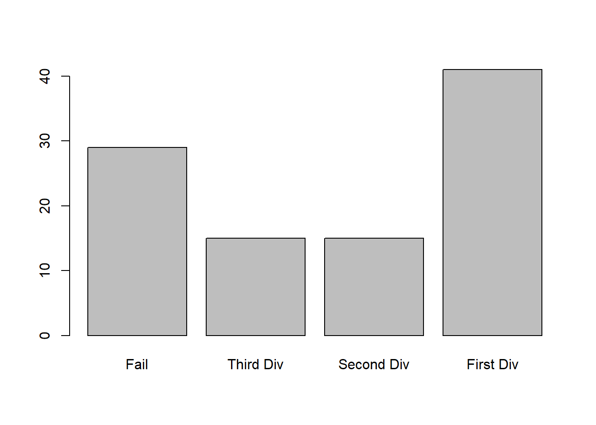

Factors are the data objects which are used to categorize the data and store it as levels. They can store both strings and integers. They are useful in the columns which have a limited number of unique values. Like “Male,”Female" and True, False etc. They are useful in data analysis for statistical modeling.
Factors are created using the factor () function by taking a vector as input.
data <- c("East","West","East","North","North","East","West",
"West","West","East","North")
factor_data=factor(data)
factor_data## [1] East West East North North East West West West East North
## Levels: East North WestBy default, the factor function assign the levels alphabetically. We can change this using levels=() command.
data <- c("East","West","East","North","North","East","West",
"West","West","East","North")
factor_data=factor(data, levels = c("North","East","West"))
factor_data## [1] East West East North North East West West West East North
## Levels: North East WestWe can also convert a numeric vector into factor:
num_data=c(0,0,1,0,1,1,1,0,1,0,1,1,0,1,0,1,1)
factor_data=factor(num_data, labels = c("Male","Female"))
factor_data## [1] Male Male Female Male Female Female Female Male Female Male
## [11] Female Female Male Female Male Female Female
## Levels: Male FemaleWe can generate factor levels by using the gl() function. It takes two integers as input which indicates how many levels and how many times each level.
gl(n, k, labels)Following is the description of the parameters used −
n is a integer giving the number of levels.
k is a integer giving the number of replications.
labels is a vector of labels for the resulting factor levels.
factor_data=gl(2,8, labels = c("Male","Female"))
factor_data## [1] Male Male Male Male Male Male Male Male Female Female
## [11] Female Female Female Female Female Female
## Levels: Male FemaleAnother example of Factor is:
# Generating 100 random numbers between 1 and 100
data = sample(1:100,100)
# Generating an empty vector of size 100.
result=mat.or.vec(100,1)
for (i in 1:100) {
if(data[i]<30){
result[i]=0
}
else if(data[i]>=30 && data[i]<45){
result[i]=1
}
else if(data[i]>=45 && data[i]<60){
result[i]=2
}
else {
result[i]=3
}
}
f_result=factor(result, labels = c("Fail", "Third Div", "Second Div", "First Div"))
str(f_result)## Factor w/ 4 levels "Fail","Third Div",..: 1 2 2 1 4 4 4 4 1 4 ...summary(f_result)## Fail Third Div Second Div First Div
## 29 15 15 41plot(f_result)